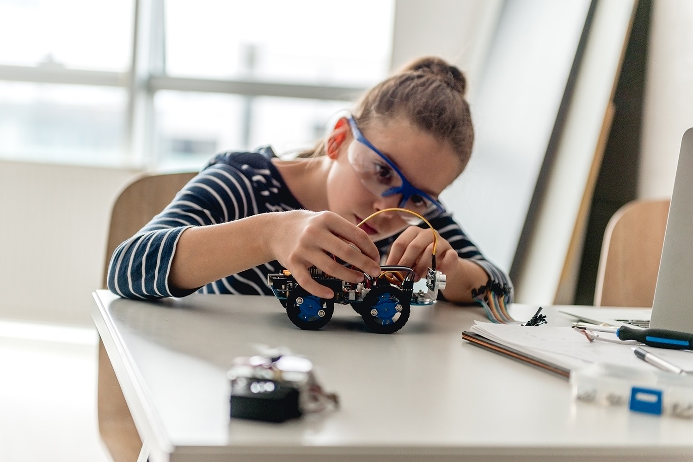

Akademik Başarı
Düzenli ölçme, eksik analizi, bireysel hedef ve sınav stratejisiyle planlı ilerleme.
Detaylı bilgi ↗CERN Koleji’nde akademik başarı, yabancı dil, kariyer planlama ve bireysel gelişim tek bir yolculukta buluşuyor.

Her öğrencinin güçlü yönünü görünür kılan, hedefini netleştiren ve gelişimini düzenli takip eden bütüncül bir yapı.
Düzenli ölçme, eksik analizi, bireysel hedef ve sınav stratejisiyle planlı ilerleme.
Detaylı bilgi ↗9. sınıftan 12. sınıfa kadar ilgi, yetenek, alan seçimi, üniversite ve meslek planlama.
Detaylı bilgi ↗İngilizceyi ders değil iletişim aracı hâline getiren, uygulamalı ve çok yönlü dil gelişimi.
Detaylı bilgi ↗Öğrencinin güçlü yönlerini keşfeden, yaratıcılığını ve problem çözme becerisini geliştiren ortamlar.
Detaylı bilgi ↗
Öğrencinin ilgi alanları, güçlü yönleri ve öğrenme alışkanlıkları görünür hâle getirilir.
Size en yakın kampüsü seçin, eğitim danışmanlarımızla görüşün ve kampüs turu planlayın.
Anaokulundan liseye kesintisiz eğitim.
Kampüs turu planla ↗Butik lise yapısı ve üniversite hazırlık modeli.
Kampüs turu planla ↗Şehrin merkezinde kariyer odaklı lise eğitimi.
Kampüs turu planla ↗Yüzdelik diliminizi yazarak tahmini başarı bursu oranınızı anında görüntüleyin.
Öğrenci ve iletişim bilgilerinizi paylaşın.
Kampüs, sınıf ve burs seçeneklerini birlikte değerlendirin.
Randevunuzu oluşturun ve eğitim yolculuğuna başlayın.
Ön Kayıt Formu
Formu bırakın, eğitim danışmanımız en kısa sürede sizinle iletişime geçsin.
Başvuru, burs ve kampüs süreçleriyle ilgili temel bilgiler.
Burs oranı öğrencinin yüzdelik dilimi, kontenjan durumu ve okul değerlendirmesine göre kesinleşir. Hesaplama alanındaki sonuç ön bilgilendirme amaçlıdır.
Ön kayıt talebi ücretsizdir. Eğitim danışmanı görüşmesinden sonra kayıt koşulları ve güncel avantajlar paylaşılır.
Formda kampüsünüzü seçmeniz yeterlidir. İlgili kampüs danışmanı sizinle iletişime geçerek uygun tarih ve saati oluşturur.
Beylikdüzü Kampüsü anaokulundan liseye kadar; Çamlıca ve Zincirlikuyu kampüsleri Anadolu Lisesi düzeyinde eğitim sunar.